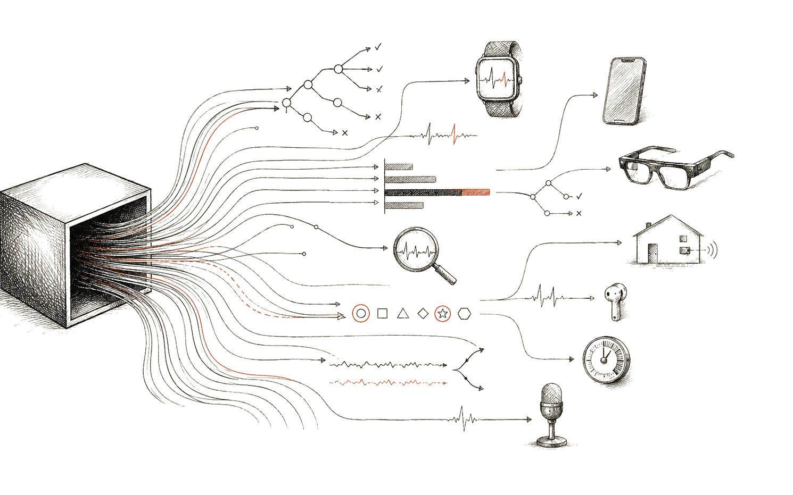

Invited Talk
Keynote

Prof. Jat Singh
University of Cambridge, UK · RC-Trust, University Alliance Ruhr, Germany
Talk title and abstract: TBA
Explainable AI for Ubiquitous, Pervasive and Wearable Computing. A workshop on transparency for AI systems embedded in the things we wear, carry, and live with.

The XAI for U workshop addresses the need for transparency in AI systems increasingly integrated into mobile devices, wearables, and smart environments, many of which remain opaque to users, designers, and stakeholders—undermining trust and adoption. The workshop focuses on Explainable AI (XAI) tools tailored to this domain and its distinctive challenges: generating explanations for time-series and multimodal data, interpreting interconnected machine learning pipelines, and delivering user-centered explanations. By bringing together researchers across related disciplines, it aims to share recent advances, surface open challenges, and propose future research directions, so that AI-driven ubiquitous solutions become not only more explainable but also better aligned with user expectations and ethical standards.
Original research, insightful case studies, and work-in-progress on XAI approaches for ubiquitous and wearable computing, including but not limited to:
Explanation methods tailored to wearable and IoT settings, including multivariate time-series and heterogeneous sensor streams.
Explaining end-to-end pipelines (pre-processing, segmentation, classification) rather than individual models in isolation.
Explanation strategies that adapt to user needs, context, and the dynamic environments typical of ubiquitous systems.
Empirical evaluation of explanations, including faithfulness metrics, user studies, and over- or under-reliance on decision-support tools.
Deploying XAI on resource-constrained wearable devices, with attention to privacy, fairness, and alignment with the EU AI Act.
Domain applications of XAI in healthcare, mental health, human activity recognition, and smart-home/smart-environment systems.
Approaches that combine symbolic reasoning, neuro-symbolic models, and LLMs for generating and verbalising explanations.
Submissions follow the ACM sigconf template, single-blind, in English. See the UbiComp/ISWC'26 formatting guidelines for details.
Full papers: up to 6 pages (including references), submitted through the Precision Conference System (PCS). Peer-reviewed; accepted full papers will be published in the ACM Digital Library and Adjunct Proceedings.
Short submissions: up to 4 pages (including references), submitted via the workshop's submission form. Accepted short submissions will not be published in the ACM Digital Library or Adjunct Proceedings, but will be listed on this website.
Poster abstracts: 1-page abstract describing an XAI-related paper accepted at the UbiComp/ISWC'26 main conference, submitted via the workshop's submission form. Listed on this website only.
At least one author of each accepted contribution must register and present in person.
Tentative — will be finalised when the call for papers is released.
Submission deadline:
Full (6 pages): July 6, 2026
Short (4 pages) & Poster abstracts: August 4, 2026
Notification of acceptance:
Full (6 pages): July 20, 2026
Short (4 pages) & Poster abstracts: Rolling basis (not later than August 10, 2026)
Camera-ready deadline:
Full (6 pages): July 31, 2026 (ACM DL hard deadline)
Short (4 pages) & Poster abstracts: August 15, 2026
Workshop dates: 11-12 October 2026
Submissions are not yet open. The call for papers and the full submission instructions will be posted here once available — please check back soon.
Full papers will be submitted via PCS (UbiComp/ISWC 2026 — XAI for U 2026 track).
Short submissions and poster abstracts will be handled
through the dedicated upload link below. Please name your file
XAIforU2026_<track>_<lastname>.pdf
(e.g. XAIforU2026_short_bombassei.pdf or
XAIforU2026_poster_ntekouli.pdf).
Submit your paper
activates once submissions are open
For registration information, fees, and deadlines, please visit the UbiComp'26 registration page.
Tentative — the full programme will be finalised after the notification of acceptance.
Swiss National Science Foundation (SNSF) — Project XAI-PAC: Towards Explainable and Private Affective Computing (PZ00P2_216405)